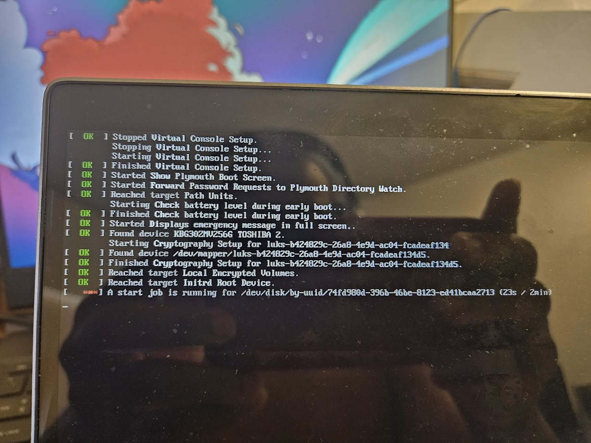

Reinstalling Cachyos
I’ve decided to reinstall cachyos, the Arch Linux fork I use on my laptop’s, because the config of my smaller laptop is getting crusty. In addition to not having any swap setup, /nix is part of the main btrfs subvolume, meaning it is included in snapshots, and my snapshots are far, far larger than they should be.
Installation
I downloaded the latest, ISO, but I had some troubles installing. I first attempted to set up an LVM2 Partition, but that crashed, and I don’t know why. The error log of the installer doesn’t have any relevant information.
I tried again, but with a simpler partitioning setup, but it errored on another step, ranking the mirrors.
An excerpt from the logs of the failed install:
--> name 'arch'; mirrorlist_path '/etc/pacman.d/mirrorlist'; special_arch ''
/usr/bin/cachyos-rate-mirrors: line 97: /usr/bin/rate-mirrors: Input/output errorI tested the command independently, and found that it was broken. It seemed to be a bugged shell script.
In order to fix this, I decided to update just the relevant packages: pacman -Sy cachyos-rate-mirrors rate-mirrors. Normally, you never want to do this, as it is a partial upgrade, and can cause many issues down the road. However, I don’t really have a choice because the system is loaded in ram right now, and I can’t do a full upgrade as I don’t have enough ram to store all of those downloaded packages — especially since CachyOS comes with a full GUI.
Once the install is done, I have to set up swap, and a separate subvolume for /nix.
I use arch-chroot to chroot into the newly installed arch system, which is thankfully still mounted at /tmp/calamares-root-ncjj4sta.
I start by following the instructions on the arch wiki for a btrfs swap file.
I also attempted to create a subvolume for nix, but this failed. When I removed the relevant lines for the nix subvolume /etc/fstab, my system booted properly.
However, since hibernate wasn’t working properly, I decided to set that up first.
I still had more issues.
I attempted to install using the Calamares installer, with a LVM setup, and a seperate swap “partition” on a logical volume… and calamares crashed. Apparently, Calameres + LVM is basically completely broken
LVM support is broken, in fact, I have no idea why is there right now.
So yeah.
I also attempted to play around with a systemd based initramfs. According to the archwiki
When an initramfs with the systemd hook is used, a resume mechanism is already provided, and no further hooks need to be added
Compared to a normal hibernate setup, you have to locate the swap partition/swapfile, and then pass it as a kernel parameter. However, systemd automatically detects a swap partition/swapfile to hibernate it. But this took me some time to get a systemd based initramfs set up properly.
The hooks are in /etc/mkinitcpio.conf must be modified as follows:
/etc/mkinitcpio.conf
HOOKS=(base systemd autodetect microcode modconf kms keyboard sd-vconsole block sd-encrypt filesystems fsck)(No resume hook is needed).
However, this still wouldn’t boot, and I couldn’t figure out why.
Figured it out: https://wiki.archlinux.org/title/Dm-crypt/System_configuration#Using_systemd-cryptsetup-generator
By copying /etc/crypttab to /etc/crypttab.initramfs, it will be copied over the the initramfs, enabling the systemd based initramfs to read a version of the crypttab configuration file stored in the initramfs.
Although, I am left with some questions, like why the non-systemd based initramfs doesn’t need this, it seems to work fine. Systemd automatically detects the swap file, even if it is stored in the encrypted btrfs partition.
Another plus: A new cachyos iso was released. This iso release, fixes the issues with the mirror software being broken.
Now that Cachyos is installed, I need to figure out how to make a top level subvolume. According to the arch wiki article on btrfs subvolumes
Tip: Consider creating the subvolume directly below the top-level subvolume, e.g. @swap. Then, make sure the subvolume is mounted to /swap (or any other accessible location).
Why is this setup better? And how do I create a subvoolume directly below the top level?
When I run btrfs su create /mnt/@nix it doesn’t properly create a subvolume. Instead, it says top level 256 path @nix, meaning that this subvolume is nested in the subvolume with ID 256, the @ subvolume. However, @home, @var, and @tmp aren’t like that, instead they have the top level 5, meaning they are directly on the top level subvolume, which is equivalent to the filesystem itself.
Okay, I think I figured it out. In the chroot I make, I mount the btrfs filesystem with @ as the root subvolume, meaning any subvolumes I create are nested below that. In order to properly create a subvolume under the top, I have to mount it first.
I still don’t understand the benefit of having a subvolume under the top level subvolume, rather than another nested subvolume layout. Maybe because snapshots happen to nested subvolumes as well, and this avoids the swapfile accidentally getting snapshotted?
I encountered another issue, after testing hibernate:

Except… that UUID doesn’t exist. There is no mention of it in /etc/fstab. Then I remembered, according to the arch wiki article for hibernation, systemd stores the location where to resume from a hibernation in /sys/firmware/vars/efivars/HibernateLocation.
{"uuid":"74fd980d-396b-46be-8123-ed41bcaa2713","offset":2269039,"kernelVersion":"6.9.3-4-cachyos","osReleaseId":"cachyos"}Now this looks good… except whatever hibernate resume was trying to happen, failed. This is probably because I reinstalled linux, after I had just hibernated it, leaving that efivar in place.
[root@cachyos-x8664 efivars]# btrfs inspect-internal map-swapfile -r /swap/swapfile
2168766The offset was wrong. To fix it? I just had to hibernate the system normally. Then this issue went away.
With this, my setup is complete. But I still don’t understand the benefits of non-nested subvolumes. I ended up making a lemmy post about it, but I haven’t gotten any conclusive answers yet.
User data
I backed up my entire home directory to a tar archive using ark, the archiver tool on KDE. However, since I was backing it up to a usb thumb drive, I used gocryptfs to encrypt the folder where the archive was stored. I encrypt sensitive data I put on my usb drives, that way, even if I lose the drive, nothing gets compromised.
Misc config changes
I also enabled the Magic sysrq key via a kernel parameter in my grub config file.
Nix not starting on boot.
I encountered another issue where nix does not start on boot. The problem is probably that, because /nix is a seperate btrfs subvolume, and the systemd service is a symlink to the nix service on /nix, systemd cannot locate the proper service. I need to either move the nix service so it is located on the root subvolume, or adjust the nix daemon service so it requires /nix to be mounted.
Thankfully, systemd unit files have an option for this: RequiresMountsFor=.
And to adjust the nix daemon service, I can use override, as mentioned on stackoverflow. Although, I don’t like this solution. Since the original service is still a symlink, would systemd really be able to find it?
I found a relevant GitHub issue on the on the page for the Determinate Systems Nix installer, which is what I use. Just like me, another user wants to have /nix on a seperate btrfs subvolume. Although they first did a workaround of removing the symlink, and copying the service files to /etc instead. However, one of the developers chimed in, mentioning the solution for the Steam Deck (a Linux handheld which uses btrfs), which was a systemd oneshot service that runs after nix is mounted, and then reloads all systemd services, and then restarts the nix socket. This was a lot easier to implement on my system.
The systemd service was stored in the source code of the installer.
https://github.com/DeterminateSystems/nix-installer/blob/main/src/planner/steam_deck.rs#L270
/etc/systemd/system/ensure-symlinked-units-resolve.service
[Unit]
Description=Ensure Nix related units which are symlinked resolve
After=nix.mount
Requires=nix.mount
DefaultDependencies=no
[Service]
Type=oneshot
RemainAfterExit=yes
ExecStart=/usr/bin/systemctl daemon-reload
ExecStart=/usr/bin/systemctl restart --no-block nix-daemon.socket
[Install]
WantedBy=sysinit.targetAnd with this, the nix socket starts properly on boot.